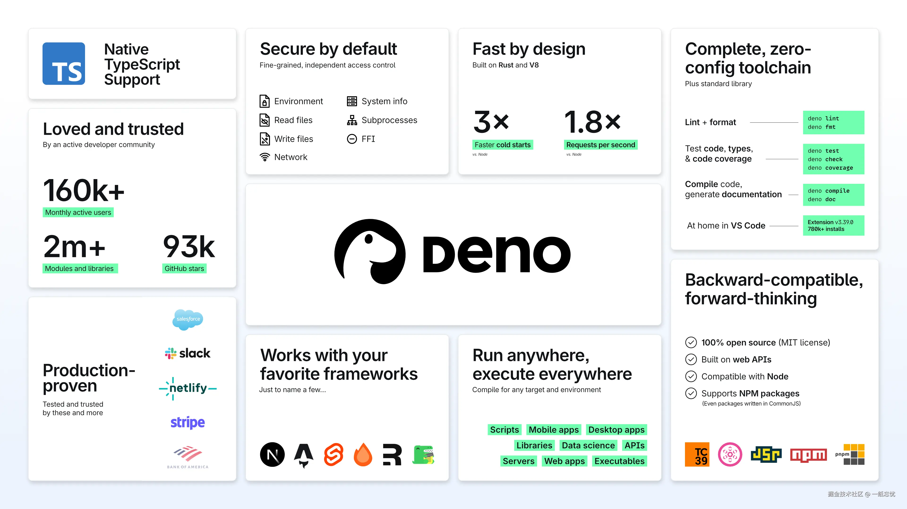

2024 年 10 月 9 日，Deno 团队正式宣布推出 Deno 2，这是一个现代化的 JavaScript 和 TypeScript 开发工具链，旨在简化 Web 编程。Deno 2 的推出标志着 Web 开发的新篇章，提供了与 Node.js 和 npm 的向后兼容性，同时保留了 Deno 用户喜爱的简洁性和安全性。
背景：Web 开发的复杂性
当前，全球有超过 50 亿人使用互联网，Web 平台成为了世界上最大的软件平台。随着 Web 开发的飞速发展，开发者面对的技术栈日益复杂，在编写代码之前，往往需要处理繁琐的配置和不必要的样板代码。然而，尽管存在这些挑战，JavaScript 作为 Web 的主要编程语言，仍然在过去十年中保持了极高的流行度，TypeScript 也迅速崛起成为第三大流行语言。
Deno 的诞生正是为了解决这些问题：它提供了一个全新的、简化的开发环境，专注于减少繁琐的配置和不必要的依赖，让开发者能专注于核心开发工作。
Deno 1 的成功与 Deno 2 的全新突破
在 Deno 1 中，我们取得了巨大的成功，吸引了数十万开发者，并成为 GitHub 上最受欢迎的 Rust 项目之一。Deno 2 版本则进一步扩展了其能力，专注于支持更大规模的项目和团队，同时保持了 Deno 用户所喜爱的简洁性、安全性和全功能工具链。
Deno 2 的新特性
Deno 2 的发布，旨在让开发者能够在更大规模上使用 Deno，同时保持其简单性和安全性。今天，我们很高兴地宣布 Deno 2 的一些主要功能包括：
- 与 Node.js 和 npm 的向后兼容性，允许无缝运行现有的 Node 应用程序
- 原生支持
package.json和node_modules - 新增
deno install、deno add和deno remove命令进行包管理 - 稳定的标准库
- 支持私有 npm 注册表
- 工作区和单体库支持
- 长期支持（LTS）版本发布
- JSR：一个现代的 JavaScript 库共享注册表
持续改进的 Deno 功能
Deno 2 还对许多现有功能进行了改进：
deno fmt现在可以格式化 HTML、CSS 和 YAMLdeno lint新增 Node 特定规则和快速修复deno test现在支持运行使用node:test编写的测试deno task现在可以运行 package.json 脚本deno doc的 HTML 输出改进了设计和搜索功能deno compile现在支持 Windows 上的代码签名和图标deno serve可以在多个核心上并行运行 HTTP 服务器deno init现在可以搭建库或服务器deno jupyter支持输出图像、图表和 HTMLdeno bench支持更精确的测量deno coverage现在可以生成 HTML 格式的报告
Deno 的未来
Deno 2 以其向后兼容性和全新功能，准备好简化和加速开发工作。开发团队可以利用 Deno 的强大功能，享受无缝的开发体验，同时不必担心配置的复杂性。
Deno 还支持多个流行的 JavaScript 框架，包括 Next.js、Astro、Remix、Angular、SvelteKit 和 QwikCity。
我们邀请您立即体验 Deno 2 的未来，开始您的开发旅程！详细信息请访问 Deno 官方文档。